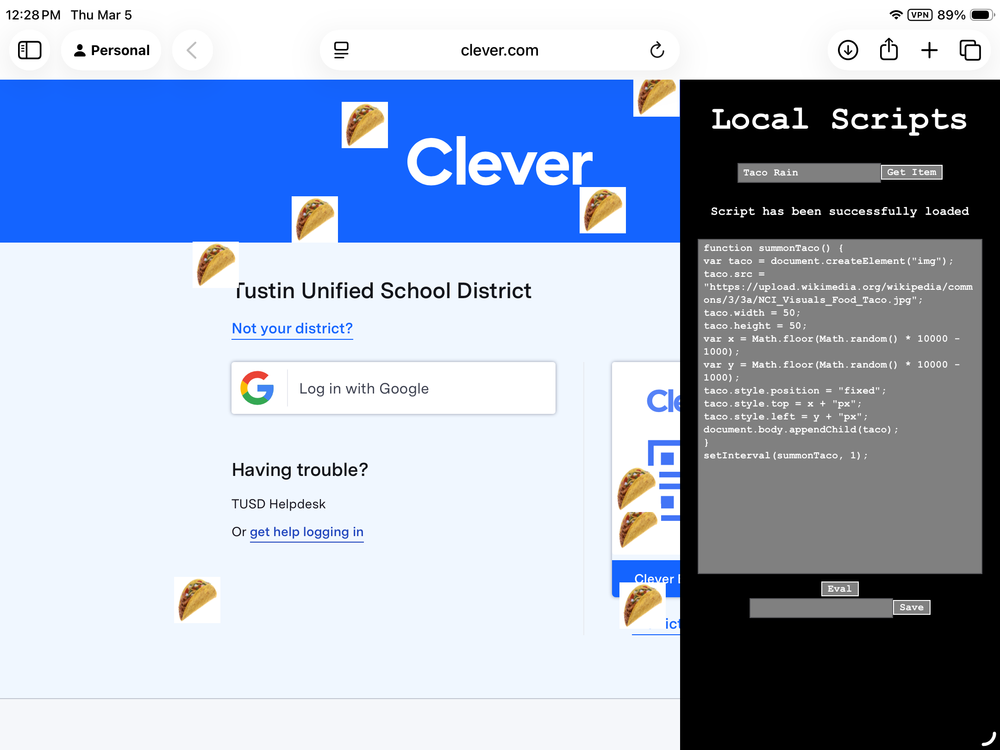

Developed by Ian C. Vu
Added By Ian C. Vu
Verified by Java Boys
Developed a script? Refreshed? Lost it? We can't find it, but we can prevent that! We don't care if you're not conected to the stupid internet. It's stored into your browser. You can grab it anytime! Just activate, code, save, and run!